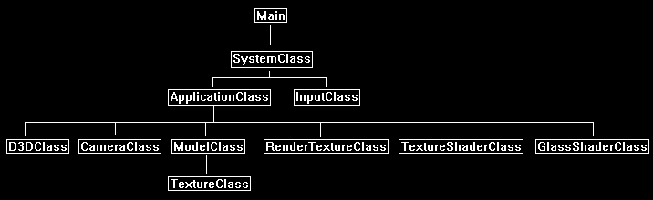

This tutorial will cover how to implement a glass and ice shader in DirectX 11 using HLSL and C++.
The code in this tutorial is based on the previous tutorials.
Glass and ice are both implemented in a shader the same way.
A normal map is used to "bend" how light travels through the glass or ice.
Each pixel in the normal map is used to offset sampling of any pixel behind the glass or ice surface.
This creates the bending of light effect which closely simulates how light moves through glass and ice surfaces and then illuminates the objects behind them.
We call this bending effect perturbation.
The difference between glass and ice is minimal in terms of how we code the shader.
Both the glass and ice will use different color textures for representing the color of the surface so in the shader it is simply a different texture input for color.
The normal map for glass and ice will also have different characteristics common to each surface type, but once again for the shader it is just a different texture input to be used as a look up table for normal vectors.
The final difference is the amount of perturbation used.
For perturbation amount we use a scaling variable we call refractionScale.
This variable allows us to manually reduce the perturbation of light for glass surfaces and to also increase it to simulate the more aggressive perturbation of light that occurs in ice.
Now if you read and understood the water shader tutorial you will realize the technique in this tutorial is just a subset of the water rendering technique and works in the same fashion without the reflection.
However, note that you can add a very slight reflection to create an even more realistic glass or ice surface, but I will leave that as an exercise for the reader and focus just on the basic effect for this tutorial.
We will now go over the basic algorithm this shader uses and then see some step-by-step image examples for both glass and ice.
Shader Algorithm
Step 1: Render the scene that is behind the glass to a texture, this is called the refraction.
Step 2: Project the refraction texture onto the glass surface.
Step 3: Perturb the texture coordinates of the refraction texture using a normal map to simulate light traveling through glass.
Step 4: Combine the perturbed refraction texture with a glass color texture for the final result.
We will now examine how to implement each step for both glass and ice.
Glass
So, first we need to render our entire scene that is viewable behind the glass to a texture.
And then we project that render to texture onto the glass surface so it appears that the glass is just a see-through view of the scene although it is really a 2D texture rendered onto two triangles.
We use render to texture and texture projection to do this which was covered in previous tutorials.
To simplify the example instead of having a complicated scene with numerous objects we will just say that our scene is a single square with a texture on it.
So, rendering the scene to texture and then projecting it onto the glass model produces the following refraction result:

If the scene were more complex your window would actually become invisible and everything would look the same.
The reason being is that if the texture is perfectly projected it would just cover the same 3D scene section with a 2D texture of the same scene making the resulting glass model a perfectly clear see-through
glass with no way to differentiate it from the 3D scene itself.
To even determine what is your glass model and what is the scene you will need to dim or brighten the glass texture to see that it actually is still there for debugging purposes.
Now that the scene is projected onto a texture you need a normal map so you can eventually perturb the refraction texture to make it look like it is behind glass.
We will use the following normal map which will give a stripped faceted look to the glass:

Now that we have a normal map, we can use each individual pixel in the normal map as a look up for how to modify what pixel in the refraction texture is sampled.
This allows us to sample the refraction texture slightly above, beside, and below to simulate light not traveling straight through but instead being bent slightly such as it is in glass.
The scale of light being bent is controlled by the refractionScale variable which we set fairly low for glass; in this example it was set to 0.01.
Note that this is entirely dependent on the normal map used as the normals can vary little or greatly in the normal map which prevents us from really having a scale value that will always work.
So now if we sample the refraction texture using the normal map texture as a lookup with the scale being 0.01, we get the following image:

The basic effect is mostly complete now.
However, most glass has a tint or color associated with it and sometimes other markings.
For the glass in this example, we will use the following color texture:

We take the color texture and the perturbed refraction and combine them to get the final glass effect:

Ice
Ice works exactly the same as glass with just different inputs into the shader.
To start with we have the same scene of the textured square projected onto the ice surface model:
However, with ice we want a different look to the final surface so we will use a different color texture:

Also, the normal map will need to be different to simulate all the tiny bumps all over the surface with ice.
Fortunately, the color texture has just the right amount of noise in it to be used to make an ice normal map.
Simply take the color texture above and use the Nivida normal map filter in Photoshop with a Scale of 5 and it creates the following normal map:

Now if we use that normal map and a stronger refractionScale such as 0.1 for ice (instead of how we used 0.01 for glass) we get the following heavily perturbed refraction image:

Finally, if we combine the perturbed refraction texture with the ice color texture the resulting image is very realistic:

One final comment before we get into the code is that when you see these shaders working on surfaces that have motion behind them (such as a spinning cube behind the glass or ice) they look incredibly real.
Framework
The frame work for this tutorial is similar to the previous tutorials.
The only new class added is the GlassShaderClass which handles the glass and ice shading.
The RenderTextureClass is used in this tutorial for rendering the 3D scene to a texture.
Also, the TextureShaderClass is used to render the spinning cube model for the regular scene that will be behind the glass or ice object.

We will start the code section by examining the HLSL code for the glass shader.
Glass.vs
////////////////////////////////////////////////////////////////////////////////
// Filename: glass.vs
////////////////////////////////////////////////////////////////////////////////
/////////////
// GLOBALS //
/////////////
cbuffer MatrixBuffer
{
matrix worldMatrix;
matrix viewMatrix;
matrix projectionMatrix;
};
//////////////
// TYPEDEFS //
//////////////
struct VertexInputType
{
float4 position : POSITION;
float2 tex : TEXCOORD0;
};
The PixelInputType structure has a new refractionPosition variable for the refraction vertex coordinates that will be passed into the pixel shader.
struct PixelInputType
{
float4 position : SV_POSITION;
float2 tex : TEXCOORD0;
float4 refractionPosition : TEXCOORD1;
};
////////////////////////////////////////////////////////////////////////////////
// Vertex Shader
////////////////////////////////////////////////////////////////////////////////
PixelInputType GlassVertexShader(VertexInputType input)
{
PixelInputType output;
matrix viewProjectWorld;
// Change the position vector to be 4 units for proper matrix calculations.
input.position.w = 1.0f;
// Calculate the position of the vertex against the world, view, and projection matrices.
output.position = mul(input.position, worldMatrix);
output.position = mul(output.position, viewMatrix);
output.position = mul(output.position, projectionMatrix);
// Store the texture coordinates for the pixel shader.
output.tex = input.tex;
Create the matrix used for transforming the input vertex coordinates to the projected coordinates.
// Create the view projection world matrix for refraction.
viewProjectWorld = mul(viewMatrix, projectionMatrix);
viewProjectWorld = mul(worldMatrix, viewProjectWorld);
Transform the input vertex coordinates to the projected values and pass it into the pixel shader.
// Calculate the input position against the viewProjectWorld matrix.
output.refractionPosition = mul(input.position, viewProjectWorld);
return output;
}
Glass.ps
////////////////////////////////////////////////////////////////////////////////
// Filename: glass.ps
////////////////////////////////////////////////////////////////////////////////
/////////////
// GLOBALS //
/////////////
SamplerState SampleType : register(s0);
The glass shader uses three different textures.
The colorTexture is the basic surface color used for the glass.
The normalTexture is the normal map lookup table containing all the normal vectors.
And finally, the refractionTexture contains the 3D scene that is behind the glass rendered to a 2D texture.
Texture2D colorTexture : register(t0);
Texture2D normalTexture : register(t1);
Texture2D refractionTexture : register(t2);
The GlassBuffer is used for setting the refractionScale.
The refractionScale variable is used for scaling the amount of perturbation to the refraction texture.
This is generally low for glass and higher for ice.
cbuffer GlassBuffer
{
float refractionScale;
float3 padding;
};
//////////////
// TYPEDEFS //
//////////////
struct PixelInputType
{
float4 position : SV_POSITION;
float2 tex : TEXCOORD0;
float4 refractionPosition : TEXCOORD1;
};
////////////////////////////////////////////////////////////////////////////////
// Pixel Shader
////////////////////////////////////////////////////////////////////////////////
float4 GlassPixelShader(PixelInputType input) : SV_TARGET
{
float2 refractTexCoord;
float4 normalMap;
float3 normal;
float4 refractionColor;
float4 textureColor;
float4 color;
First convert the input projected homogenous coordinates (-1, +1) to (0, 1) texture coordinates.
// Calculate the projected refraction texture coordinates.
refractTexCoord.x = input.refractionPosition.x / input.refractionPosition.w / 2.0f + 0.5f;
refractTexCoord.y = -input.refractionPosition.y / input.refractionPosition.w / 2.0f + 0.5f;
Next sample the normal map and move it from (0, 1) texture coordinates to (-1, 1) coordinates.
// Sample the normal from the normal map texture.
normalMap = normalTexture.Sample(SampleType, input.tex);
// Expand the range of the normal from (0,1) to (-1,+1).
normal = (normalMap.xyz * 2.0f) - 1.0f;
Now perturb the refraction texture sampling location by the normals that were calculated.
Also multiply the normal by the refraction scale to increase or decrease the perturbation.
// Re-position the texture coordinate sampling position by the normal map value to simulate light distortion through glass.
refractTexCoord = refractTexCoord + (normal.xy * refractionScale);
Next sample the refraction texture using the perturbed coordinates and sample the color texture using the normal input texture coordinates.
// Sample the texture pixel from the refraction texture using the perturbed texture coordinates.
refractionColor = refractionTexture.Sample(SampleType, refractTexCoord);
// Sample the texture pixel from the glass color texture.
textureColor = colorTexture.Sample(SampleType, input.tex);
Finally combine the refraction and color texture for the final result.
// Evenly combine the glass color and refraction value for the final color.
color = lerp(refractionColor, textureColor, 0.5f);
return color;
}
Glassshaderclass.h
The GlassShaderClass is based on the TextureShaderClass with slight changes for glass shading.
////////////////////////////////////////////////////////////////////////////////
// Filename: glassshaderclass.h
////////////////////////////////////////////////////////////////////////////////
#ifndef _GLASSSHADERCLASS_H_
#define _GLASSSHADERCLASS_H_
//////////////
// INCLUDES //
//////////////
#include <d3d11.h>
#include <d3dcompiler.h>
#include <directxmath.h>
#include <fstream>
using namespace DirectX;
using namespace std;
////////////////////////////////////////////////////////////////////////////////
// Class name: GlassShaderClass
////////////////////////////////////////////////////////////////////////////////
class GlassShaderClass
{
private:
struct MatrixBufferType
{
XMMATRIX world;
XMMATRIX view;
XMMATRIX projection;
};
We have a new structure type used for setting the refraction scale in the constant buffer inside the pixel shader.
struct GlassBufferType
{
float refractionScale;
XMFLOAT3 padding;
};
public:
GlassShaderClass();
GlassShaderClass(const GlassShaderClass&);
~GlassShaderClass();
bool Initialize(ID3D11Device*, HWND);
void Shutdown();
bool Render(ID3D11DeviceContext*, int, XMMATRIX, XMMATRIX, XMMATRIX, ID3D11ShaderResourceView*,
ID3D11ShaderResourceView*, ID3D11ShaderResourceView*, float);
private:
bool InitializeShader(ID3D11Device*, HWND, WCHAR*, WCHAR*);
void ShutdownShader();
void OutputShaderErrorMessage(ID3D10Blob*, HWND, WCHAR*);
bool SetShaderParameters(ID3D11DeviceContext*, XMMATRIX, XMMATRIX, XMMATRIX, ID3D11ShaderResourceView*,
ID3D11ShaderResourceView*, ID3D11ShaderResourceView*, float);
void RenderShader(ID3D11DeviceContext*, int);
private:
ID3D11VertexShader* m_vertexShader;
ID3D11PixelShader* m_pixelShader;
ID3D11InputLayout* m_layout;
ID3D11Buffer* m_matrixBuffer;
ID3D11SamplerState* m_sampleState;
The glass shader needs a refraction scale value which the m_glassBuffer pointer provides an interface to.
ID3D11Buffer* m_glassBuffer;
};
#endif
Glassshaderclass.cpp
////////////////////////////////////////////////////////////////////////////////
// Filename: glassshaderclass.cpp
////////////////////////////////////////////////////////////////////////////////
#include "glassshaderclass.h"
GlassShaderClass::GlassShaderClass()
{
m_vertexShader = 0;
m_pixelShader = 0;
m_layout = 0;
m_sampleState = 0;
m_matrixBuffer = 0;
Initialize the glass buffer to null in the class constructor.
m_glassBuffer = 0;
}
GlassShaderClass::GlassShaderClass(const GlassShaderClass& other)
{
}
GlassShaderClass::~GlassShaderClass()
{
}
bool GlassShaderClass::Initialize(ID3D11Device* device, HWND hwnd)
{
wchar_t vsFilename[128], psFilename[128];
int error;
bool result;
We load the glass.vs and glass.ps HLSL shader files here.
// Set the filename of the vertex shader.
error = wcscpy_s(vsFilename, 128, L"../Engine/glass.vs");
if(error != 0)
{
return false;
}
// Set the filename of the pixel shader.
error = wcscpy_s(psFilename, 128, L"../Engine/glass.ps");
if(error != 0)
{
return false;
}
// Initialize the vertex and pixel shaders.
result = InitializeShader(device, hwnd, vsFilename, psFilename);
if(!result)
{
return false;
}
return true;
}
void GlassShaderClass::Shutdown()
{
// Shutdown the vertex and pixel shaders as well as the related objects.
ShutdownShader();
return;
}
The Render function now takes as input the color texture, normal map texture, refraction texture, and refraction scale value.
These values are set in the shader first using the SetShaderParameters function before the rendering occurs in the RenderShader function which is called afterward.
bool GlassShaderClass::Render(ID3D11DeviceContext* deviceContext, int indexCount, XMMATRIX worldMatrix, XMMATRIX viewMatrix, XMMATRIX projectionMatrix,
ID3D11ShaderResourceView* colorTexture, ID3D11ShaderResourceView* normalTexture,
ID3D11ShaderResourceView* refractionTexture, float refractionScale)
{
bool result;
// Set the shader parameters that it will use for rendering.
result = SetShaderParameters(deviceContext, worldMatrix, viewMatrix, projectionMatrix, colorTexture,
normalTexture, refractionTexture, refractionScale);
if(!result)
{
return false;
}
// Now render the prepared buffers with the shader.
RenderShader(deviceContext, indexCount);
return true;
}
bool GlassShaderClass::InitializeShader(ID3D11Device* device, HWND hwnd, WCHAR* vsFilename, WCHAR* psFilename)
{
HRESULT result;
ID3D10Blob* errorMessage;
ID3D10Blob* vertexShaderBuffer;
ID3D10Blob* pixelShaderBuffer;
D3D11_INPUT_ELEMENT_DESC polygonLayout[2];
unsigned int numElements;
D3D11_BUFFER_DESC matrixBufferDesc;
D3D11_SAMPLER_DESC samplerDesc;
D3D11_BUFFER_DESC glassBufferDesc;
// Initialize the pointers this function will use to null.
errorMessage = 0;
vertexShaderBuffer = 0;
pixelShaderBuffer = 0;
Load the glass vertex shader.
// Compile the vertex shader code.
result = D3DCompileFromFile(vsFilename, NULL, NULL, "GlassVertexShader", "vs_5_0", D3D10_SHADER_ENABLE_STRICTNESS, 0,
&vertexShaderBuffer, &errorMessage);
if(FAILED(result))
{
// If the shader failed to compile it should have writen something to the error message.
if(errorMessage)
{
OutputShaderErrorMessage(errorMessage, hwnd, vsFilename);
}
// If there was nothing in the error message then it simply could not find the shader file itself.
else
{
MessageBox(hwnd, vsFilename, L"Missing Shader File", MB_OK);
}
return false;
}
Load the glass pixel shader.
// Compile the pixel shader code.
result = D3DCompileFromFile(psFilename, NULL, NULL, "GlassPixelShader", "ps_5_0", D3D10_SHADER_ENABLE_STRICTNESS, 0,
&pixelShaderBuffer, &errorMessage);
if(FAILED(result))
{
// If the shader failed to compile it should have writen something to the error message.
if(errorMessage)
{
OutputShaderErrorMessage(errorMessage, hwnd, psFilename);
}
// If there was nothing in the error message then it simply could not find the file itself.
else
{
MessageBox(hwnd, psFilename, L"Missing Shader File", MB_OK);
}
return false;
}
// Create the vertex shader from the buffer.
result = device->CreateVertexShader(vertexShaderBuffer->GetBufferPointer(), vertexShaderBuffer->GetBufferSize(), NULL, &m_vertexShader);
if(FAILED(result))
{
return false;
}
// Create the pixel shader from the buffer.
result = device->CreatePixelShader(pixelShaderBuffer->GetBufferPointer(), pixelShaderBuffer->GetBufferSize(), NULL, &m_pixelShader);
if(FAILED(result))
{
return false;
}
// Create the vertex input layout description.
polygonLayout[0].SemanticName = "POSITION";
polygonLayout[0].SemanticIndex = 0;
polygonLayout[0].Format = DXGI_FORMAT_R32G32B32_FLOAT;
polygonLayout[0].InputSlot = 0;
polygonLayout[0].AlignedByteOffset = 0;
polygonLayout[0].InputSlotClass = D3D11_INPUT_PER_VERTEX_DATA;
polygonLayout[0].InstanceDataStepRate = 0;
polygonLayout[1].SemanticName = "TEXCOORD";
polygonLayout[1].SemanticIndex = 0;
polygonLayout[1].Format = DXGI_FORMAT_R32G32_FLOAT;
polygonLayout[1].InputSlot = 0;
polygonLayout[1].AlignedByteOffset = D3D11_APPEND_ALIGNED_ELEMENT;
polygonLayout[1].InputSlotClass = D3D11_INPUT_PER_VERTEX_DATA;
polygonLayout[1].InstanceDataStepRate = 0;
// Get a count of the elements in the layout.
numElements = sizeof(polygonLayout) / sizeof(polygonLayout[0]);
// Create the vertex input layout.
result = device->CreateInputLayout(polygonLayout, numElements, vertexShaderBuffer->GetBufferPointer(),
vertexShaderBuffer->GetBufferSize(), &m_layout);
if(FAILED(result))
{
return false;
}
// Release the vertex shader buffer and pixel shader buffer since they are no longer needed.
vertexShaderBuffer->Release();
vertexShaderBuffer = 0;
pixelShaderBuffer->Release();
pixelShaderBuffer = 0;
// Setup the description of the dynamic matrix constant buffer that is in the vertex shader.
matrixBufferDesc.Usage = D3D11_USAGE_DYNAMIC;
matrixBufferDesc.ByteWidth = sizeof(MatrixBufferType);
matrixBufferDesc.BindFlags = D3D11_BIND_CONSTANT_BUFFER;
matrixBufferDesc.CPUAccessFlags = D3D11_CPU_ACCESS_WRITE;
matrixBufferDesc.MiscFlags = 0;
matrixBufferDesc.StructureByteStride = 0;
// Create the constant buffer pointer so we can access the vertex shader constant buffer from within this class.
result = device->CreateBuffer(&matrixBufferDesc, NULL, &m_matrixBuffer);
if(FAILED(result))
{
return false;
}
// Create a texture sampler state description.
samplerDesc.Filter = D3D11_FILTER_MIN_MAG_MIP_LINEAR;
samplerDesc.AddressU = D3D11_TEXTURE_ADDRESS_WRAP;
samplerDesc.AddressV = D3D11_TEXTURE_ADDRESS_WRAP;
samplerDesc.AddressW = D3D11_TEXTURE_ADDRESS_WRAP;
samplerDesc.MipLODBias = 0.0f;
samplerDesc.MaxAnisotropy = 1;
samplerDesc.ComparisonFunc = D3D11_COMPARISON_ALWAYS;
samplerDesc.BorderColor[0] = 0;
samplerDesc.BorderColor[1] = 0;
samplerDesc.BorderColor[2] = 0;
samplerDesc.BorderColor[3] = 0;
samplerDesc.MinLOD = 0;
samplerDesc.MaxLOD = D3D11_FLOAT32_MAX;
// Create the texture sampler state.
result = device->CreateSamplerState(&samplerDesc, &m_sampleState);
if(FAILED(result))
{
return false;
}
Setup the description and create the glass buffer which will be used to set the refraction scale in the pixel shader.
// Setup the description of the glass dynamic constant buffer that is in the pixel shader.
glassBufferDesc.Usage = D3D11_USAGE_DYNAMIC;
glassBufferDesc.ByteWidth = sizeof(GlassBufferType);
glassBufferDesc.BindFlags = D3D11_BIND_CONSTANT_BUFFER;
glassBufferDesc.CPUAccessFlags = D3D11_CPU_ACCESS_WRITE;
glassBufferDesc.MiscFlags = 0;
glassBufferDesc.StructureByteStride = 0;
// Create the constant buffer pointer so we can access the vertex shader constant buffer from within this class.
result = device->CreateBuffer(&glassBufferDesc, NULL, &m_glassBuffer);
if(FAILED(result))
{
return false;
}
return true;
}
void GlassShaderClass::ShutdownShader()
{
Release the new glass buffer in the ShutdownShader function.
// Release the glass constant buffer.
if(m_glassBuffer)
{
m_glassBuffer->Release();
m_glassBuffer = 0;
}
// Release the sampler state.
if(m_sampleState)
{
m_sampleState->Release();
m_sampleState = 0;
}
// Release the matrix constant buffer.
if(m_matrixBuffer)
{
m_matrixBuffer->Release();
m_matrixBuffer = 0;
}
// Release the layout.
if(m_layout)
{
m_layout->Release();
m_layout = 0;
}
// Release the pixel shader.
if(m_pixelShader)
{
m_pixelShader->Release();
m_pixelShader = 0;
}
// Release the vertex shader.
if(m_vertexShader)
{
m_vertexShader->Release();
m_vertexShader = 0;
}
return;
}
void GlassShaderClass::OutputShaderErrorMessage(ID3D10Blob* errorMessage, HWND hwnd, WCHAR* shaderFilename)
{
char* compileErrors;
unsigned long long bufferSize, i;
ofstream fout;
// Get a pointer to the error message text buffer.
compileErrors = (char*)(errorMessage->GetBufferPointer());
// Get the length of the message.
bufferSize = errorMessage->GetBufferSize();
// Open a file to write the error message to.
fout.open("shader-error.txt");
// Write out the error message.
for(i=0; i<bufferSize; i++)
{
fout << compileErrors[i];
}
// Close the file.
fout.close();
// Release the error message.
errorMessage->Release();
errorMessage = 0;
// Pop a message up on the screen to notify the user to check the text file for compile errors.
MessageBox(hwnd, L"Error compiling shader. Check shader-error.txt for message.", shaderFilename, MB_OK);
return;
}
bool GlassShaderClass::SetShaderParameters(ID3D11DeviceContext* deviceContext, XMMATRIX worldMatrix, XMMATRIX viewMatrix, XMMATRIX projectionMatrix,
ID3D11ShaderResourceView* colorTexture, ID3D11ShaderResourceView* normalTexture, ID3D11ShaderResourceView* refractionTexture,
float refractionScale)
{
HRESULT result;
D3D11_MAPPED_SUBRESOURCE mappedResource;
MatrixBufferType* dataPtr;
unsigned int bufferNumber;
GlassBufferType* dataPtr2;
Transpose and set the matrices.
// Transpose the matrices to prepare them for the shader.
worldMatrix = XMMatrixTranspose(worldMatrix);
viewMatrix = XMMatrixTranspose(viewMatrix);
projectionMatrix = XMMatrixTranspose(projectionMatrix);
// Lock the constant buffer so it can be written to.
result = deviceContext->Map(m_matrixBuffer, 0, D3D11_MAP_WRITE_DISCARD, 0, &mappedResource);
if(FAILED(result))
{
return false;
}
// Get a pointer to the data in the constant buffer.
dataPtr = (MatrixBufferType*)mappedResource.pData;
// Copy the matrices into the constant buffer.
dataPtr->world = worldMatrix;
dataPtr->view = viewMatrix;
dataPtr->projection = projectionMatrix;
// Unlock the constant buffer.
deviceContext->Unmap(m_matrixBuffer, 0);
// Set the position of the constant buffer in the vertex shader.
bufferNumber = 0;
// Finally set the constant buffer in the vertex shader with the updated values.
deviceContext->VSSetConstantBuffers(bufferNumber, 1, &m_matrixBuffer);
The color, normal, and refraction textures are set in the pixel shader here.
// Set the three shader texture resources in the pixel shader.
deviceContext->PSSetShaderResources(0, 1, &colorTexture);
deviceContext->PSSetShaderResources(1, 1, &normalTexture);
deviceContext->PSSetShaderResources(2, 1, &refractionTexture);
The glass buffer is locked and then the refractionScale value is copied into the glass buffer and then set in the pixel shader.
// Lock the glass constant buffer so it can be written to.
result = deviceContext->Map(m_glassBuffer, 0, D3D11_MAP_WRITE_DISCARD, 0, &mappedResource);
if(FAILED(result))
{
return false;
}
// Get a pointer to the data in the constant buffer.
dataPtr2 = (GlassBufferType*)mappedResource.pData;
// Copy the variables into the glass constant buffer.
dataPtr2->refractionScale = refractionScale;
dataPtr2->padding = XMFLOAT3(0.0f, 0.0f, 0.0f);
// Unlock the constant buffer.
deviceContext->Unmap(m_glassBuffer, 0);
// Set the position of the glass constant buffer in the pixel shader.
bufferNumber = 0;
// Finally set the glass constant buffer in the pixel shader with the updated values.
deviceContext->PSSetConstantBuffers(bufferNumber, 1, &m_glassBuffer);
return true;
}
void GlassShaderClass::RenderShader(ID3D11DeviceContext* deviceContext, int indexCount)
{
// Set the vertex input layout.
deviceContext->IASetInputLayout(m_layout);
// Set the vertex and pixel shaders that will be used to render the geometry.
deviceContext->VSSetShader(m_vertexShader, NULL, 0);
deviceContext->PSSetShader(m_pixelShader, NULL, 0);
// Set the sampler state in the pixel shader.
deviceContext->PSSetSamplers(0, 1, &m_sampleState);
// Render the geometry.
deviceContext->DrawIndexed(indexCount, 0, 0);
return;
}
Applicationclass.h
////////////////////////////////////////////////////////////////////////////////
// Filename: applicationclass.h
////////////////////////////////////////////////////////////////////////////////
#ifndef _APPLICATIONCLASS_H_
#define _APPLICATIONCLASS_H_
///////////////////////
// MY CLASS INCLUDES //
///////////////////////
#include "d3dclass.h"
#include "inputclass.h"
#include "cameraclass.h"
#include "modelclass.h"
#include "rendertextureclass.h"
#include "textureshaderclass.h"
The new GlassShaderClass header file is included now.
#include "glassshaderclass.h"
/////////////
// GLOBALS //
/////////////
const bool FULL_SCREEN = false;
const bool VSYNC_ENABLED = true;
const float SCREEN_DEPTH = 1000.0f;
const float SCREEN_NEAR = 0.3f;
////////////////////////////////////////////////////////////////////////////////
// Class name: ApplicationClass
////////////////////////////////////////////////////////////////////////////////
class ApplicationClass
{
public:
ApplicationClass();
ApplicationClass(const ApplicationClass&);
~ApplicationClass();
bool Initialize(int, int, HWND);
void Shutdown();
bool Frame(InputClass*);
private:
bool RenderSceneToTexture(float);
bool Render(float);
private:
D3DClass* m_Direct3D;
CameraClass* m_Camera;
We create a model for the spinning cube and the glass window.
ModelClass* m_Model;
ModelClass* m_WindowModel;
We need a render to texture object to render the spinning cube part of the scene.
RenderTextureClass* m_RenderTexture;
The texture shader is used to render the normal scene.
The glass shader is used to render the glass window model.
TextureShaderClass* m_TextureShader;
GlassShaderClass* m_GlassShader;
};
#endif
Applicationclass.cpp
////////////////////////////////////////////////////////////////////////////////
// Filename: applicationclass.cpp
////////////////////////////////////////////////////////////////////////////////
#include "applicationclass.h"
ApplicationClass::ApplicationClass()
{
m_Direct3D = 0;
m_Camera = 0;
m_Model = 0;
m_WindowModel = 0;
m_RenderTexture = 0;
m_TextureShader = 0;
m_GlassShader = 0;
}
ApplicationClass::ApplicationClass(const ApplicationClass& other)
{
}
ApplicationClass::~ApplicationClass()
{
}
bool ApplicationClass::Initialize(int screenWidth, int screenHeight, HWND hwnd)
{
char modelFilename[128], textureFilename1[128], textureFilename2[128];
bool result;
// Create and initialize the Direct3D object.
m_Direct3D = new D3DClass;
result = m_Direct3D->Initialize(screenWidth, screenHeight, VSYNC_ENABLED, hwnd, FULL_SCREEN, SCREEN_DEPTH, SCREEN_NEAR);
if(!result)
{
MessageBox(hwnd, L"Could not initialize Direct3D.", L"Error", MB_OK);
return false;
}
// Create and initialize the camera object.
m_Camera = new CameraClass;
m_Camera->SetPosition(0.0f, 0.0f, -5.0f);
m_Camera->Render();
Create a model for the cube that will be spinning behind the glass window.
It has a normal map associated with it but is not used so you can ignore it.
I did this just to make the initialize generic.
// Set the file name of the cube model.
strcpy_s(modelFilename, "../Engine/data/cube.txt");
// Set the file name of the textures for the cube model.
strcpy_s(textureFilename1, "../Engine/data/stone01.tga");
strcpy_s(textureFilename2, "../Engine/data/normal03.tga");
// Create and initialize the cube model object.
m_Model = new ModelClass;
result = m_Model->Initialize(m_Direct3D->GetDevice(), m_Direct3D->GetDeviceContext(), modelFilename, textureFilename1, textureFilename2);
if(!result)
{
MessageBox(hwnd, L"Could not initialize the cube model object.", L"Error", MB_OK);
return false;
}
Create a model for the glass window.
It uses the square .obj model since the window will just be two triangles that make up a square.
It also uses a texture called glass01.tga for the glass color and a normal map called normal.tga for the perturbation of the glass refraction.
// Set the file name of the window model.
strcpy_s(modelFilename, "../Engine/data/square.txt");
// Set the file name of the textures for the window model.
strcpy_s(textureFilename1, "../Engine/data/glass01.tga");
strcpy_s(textureFilename2, "../Engine/data/normal03.tga");
// Create and initialize the window model object.
m_WindowModel = new ModelClass;
result = m_WindowModel->Initialize(m_Direct3D->GetDevice(), m_Direct3D->GetDeviceContext(), modelFilename, textureFilename1, textureFilename2);
if(!result)
{
MessageBox(hwnd, L"Could not initialize the window model object.", L"Error", MB_OK);
return false;
}
The render to texture object will be used to render the refraction of the scene to a texture and then passed into the glass shader as input.
// Create and initialize the render to texture object.
m_RenderTexture = new RenderTextureClass;
result = m_RenderTexture ->Initialize(m_Direct3D->GetDevice(), screenWidth, screenHeight, SCREEN_DEPTH, SCREEN_NEAR, 1);
if(!result)
{
MessageBox(hwnd, L"Could not initialize the render texture object.", L"Error", MB_OK);
return false;
}
The texture shader is used to render the spinning cube.
// Create and initialize the texture shader object.
m_TextureShader = new TextureShaderClass;
result = m_TextureShader->Initialize(m_Direct3D->GetDevice(), hwnd);
if(!result)
{
MessageBox(hwnd, L"Could not initialize the texture shader object.", L"Error", MB_OK);
return false;
}
This is where the new glass shader is created and initialized.
// Create and initialize the glass shader object.
m_GlassShader = new GlassShaderClass;
result = m_GlassShader->Initialize(m_Direct3D->GetDevice(), hwnd);
if(!result)
{
MessageBox(hwnd, L"Could not initialize the glass shader object.", L"Error", MB_OK);
return false;
}
return true;
}
void ApplicationClass::Shutdown()
{
// Release the glass shader object.
if(m_GlassShader)
{
m_GlassShader->Shutdown();
delete m_GlassShader;
m_GlassShader = 0;
}
// Release the texture shader object.
if(m_TextureShader)
{
m_TextureShader->Shutdown();
delete m_TextureShader;
m_TextureShader = 0;
}
// Release the render to texture object.
if(m_RenderTexture)
{
m_RenderTexture->Shutdown();
delete m_RenderTexture;
m_RenderTexture = 0;
}
// Release the window model object.
if(m_WindowModel)
{
m_WindowModel->Shutdown();
delete m_WindowModel;
m_WindowModel = 0;
}
// Release the cube model object.
if(m_Model)
{
m_Model->Shutdown();
delete m_Model;
m_Model = 0;
}
// Release the camera object.
if(m_Camera)
{
delete m_Camera;
m_Camera = 0;
}
// Release the Direct3D object.
if(m_Direct3D)
{
m_Direct3D->Shutdown();
delete m_Direct3D;
m_Direct3D = 0;
}
return;
}
bool ApplicationClass::Frame(InputClass* Input)
{
static float rotation = 0.0f;
bool result;
// Check if the user pressed escape and wants to exit the application.
if(Input->IsEscapePressed())
{
return false;
}
We update the rotation of the cube each frame and send the same value into both the RenderSceneToTexture and Render function to keep the rotation in sync.
// Update the rotation variable each frame.
rotation -= 0.0174532925f * 0.25f;
if(rotation < 0.0f)
{
rotation += 360.0f;
}
First, we render the 3D scene to a texture so the glass shader will have a refraction texture as input.
// Render the cube spinning scene to texture first.
result = RenderSceneToTexture(rotation);
if(!result)
{
return false;
}
Then we render the scene again normally and render the glass over top of it with the perturbed and colored refraction texture rendered on the glass model.
// Render the graphics scene.
result = Render(rotation);
if(!result)
{
return false;
}
return true;
}
The RenderSceneToTexture function just renders the 3D spinning cube scene to a render texture.
bool ApplicationClass::RenderSceneToTexture(float rotation)
{
XMMATRIX worldMatrix, viewMatrix, projectionMatrix;
bool result;
// Set the render target to be the render to texture and clear it.
m_RenderTexture->SetRenderTarget(m_Direct3D->GetDeviceContext());
m_RenderTexture->ClearRenderTarget(m_Direct3D->GetDeviceContext(), 0.0f, 0.0f, 0.0f, 1.0f);
// Get the world, view, and projection matrices from the camera and d3d objects.
m_Direct3D->GetWorldMatrix(worldMatrix);
m_Camera->GetViewMatrix(viewMatrix);
m_Direct3D->GetProjectionMatrix(projectionMatrix);
// Rotate the world matrix by the rotation value so that the cube will spin.
worldMatrix = XMMatrixRotationY(rotation);
// Render the cube model using the texture shader.
m_Model->Render(m_Direct3D->GetDeviceContext());
result = m_TextureShader->Render(m_Direct3D->GetDeviceContext(), m_Model->GetIndexCount(), worldMatrix, viewMatrix, projectionMatrix, m_Model->GetTexture(0));
if(!result)
{
return false;
}
// Reset the render target back to the original back buffer and not the render to texture anymore. And reset the viewport back to the original.
m_Direct3D->SetBackBufferRenderTarget();
m_Direct3D->ResetViewport();
return true;
}
bool ApplicationClass::Render(float rotation)
{
XMMATRIX worldMatrix, viewMatrix, projectionMatrix;
float refractionScale;
bool result;
First set the refraction scale to modify how much perturbation occurs in the glass.
// Set the refraction scale for the glass shader.
refractionScale = 0.01f;
// Clear the buffers to begin the scene.
m_Direct3D->BeginScene(0.0f, 0.0f, 0.0f, 1.0f);
// Get the world, view, and projection matrices from the camera and d3d objects.
m_Direct3D->GetWorldMatrix(worldMatrix);
m_Camera->GetViewMatrix(viewMatrix);
m_Direct3D->GetProjectionMatrix(projectionMatrix);
Then render the 3D spinning cube scene as normal.
// Rotate the world matrix by the rotation value so that the cube will spin.
worldMatrix = XMMatrixRotationY(rotation);
// Render the cube model using the texture shader.
m_Model->Render(m_Direct3D->GetDeviceContext());
result = m_TextureShader->Render(m_Direct3D->GetDeviceContext(), m_Model->GetIndexCount(), worldMatrix, viewMatrix, projectionMatrix, m_Model->GetTexture(0));
if(!result)
{
return false;
}
Now render the window model using the glass shader with the color texture, normal map, refraction render to texture, and refraction scale as input.
// Translate to back where the window model will be rendered.
worldMatrix = XMMatrixTranslation(0.0f, 0.0f, -1.5f);
// Render the window model using the glass shader.
m_WindowModel->Render(m_Direct3D->GetDeviceContext());
result = m_GlassShader->Render(m_Direct3D->GetDeviceContext(), m_WindowModel->GetIndexCount(), worldMatrix, viewMatrix, projectionMatrix, m_WindowModel->GetTexture(0),
m_WindowModel->GetTexture(1), m_RenderTexture->GetShaderResourceView(), refractionScale);
if(!result)
{
return false;
}
// Present the rendered scene to the screen.
m_Direct3D->EndScene();
return true;
}
Summary
We can now render both glass and ice effects through the use of refraction and a normal map for perturbation.


To Do Exercises
1. Recompile and run the program. You should get a spinning cube behind green perturbed glass. Press escape to quit.
2. Implement the ice effect by using the provided ice color and normal texture and changing the refraction scale to 0.1f.
3. Change the value of the refractionScale to see how it affects the perturbation.
4. Modify the combination of the color texture and the perturbed refraction texture in the pixel shader to get different output results.
5. Make your own glass color texture and normal map to get your own glass effect to work (also modify the refractionScale so it looks right for your normal map).
Source Code
Source Code and Data Files: dx11win10tut32_src.zip